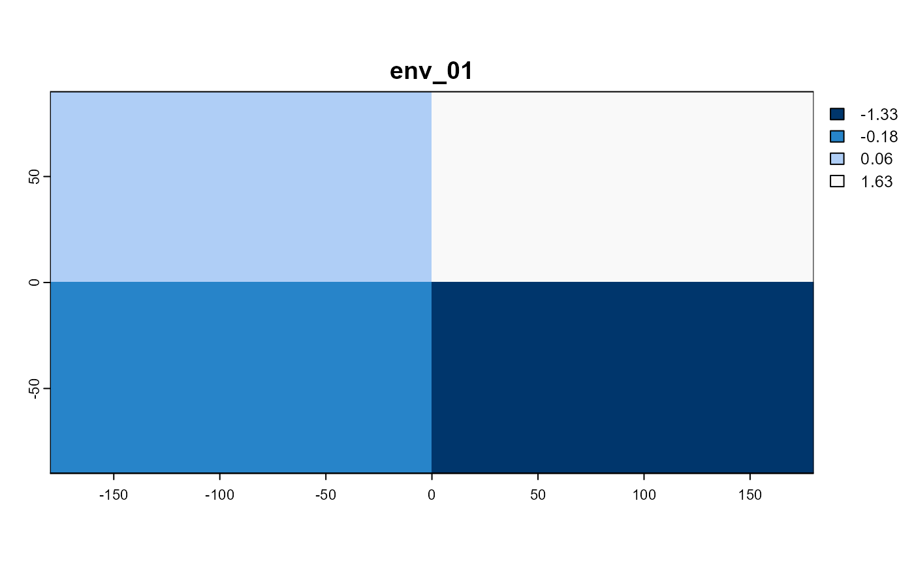

Plots the specified current environment of a metaRangeSimulation object.
Usage
# S3 method for metaRangeEnvironment
plot(x, env_name, col, as_timeseries = FALSE, main = NULL, ...)Arguments
- x
<metaRangeEnvironment>metaRangeEnvironment object.- env_name
<string>name of the (sub) environment to plot.- col
<character>colors to use. Defaults togrDevices::hcl.colors()withn = 50and a random palette.- as_timeseries
<logical>ifTRUE, plot the mean of each layer of the (source) environment as a line graph over time, ifFALSEplot the (current) environment as a raster.- main
<string>optional title of the plot. Will be labeled automatically when NULL.- ...
additional arguments passed to terra::plot or base::plot.
Examples
sim_env <- terra::sds(terra::rast(vals = 1:4, nrow = 2, ncol = 2, nlyr = 4))
#> Warning: [setValues] values were recycled
names(sim_env) <- "env_01"
test_sim <- metaRangeSimulation$new(source_environment = sim_env)
test_sim$environment$set_current(1)
plot(test_sim$environment, "env_01")

plot(test_sim$environment, "env_01", as_timeseries = TRUE)